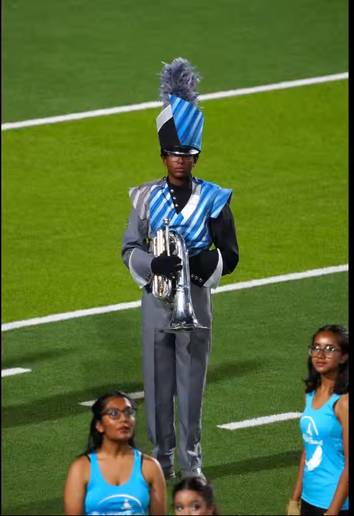
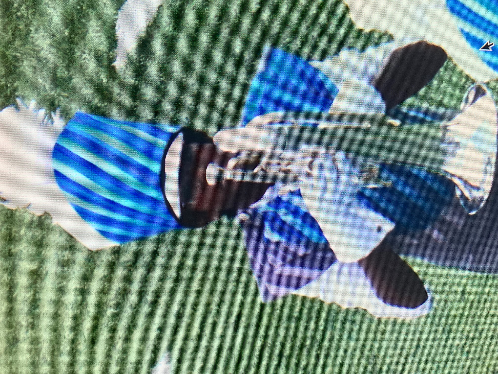

Welcome to My Portfolio
Hello! I'm Samarth Ramesh Babu, a dedicated and passionate high school student based in Frisco, TX. I have a strong interest in technology, education, and robotics, which drives me to explore and build new skills every day. I strive to blend creativity and logic through coding projects, engineering challenges, and community engagement.
This portfolio website serves as a hub for sharing my journey, achievements, and ongoing projects. Whether you are here to learn about my tutoring availability, view my robotics endeavors, or simply connect, I hope you find this space informative and inspiring. Feel free to explore the tabs and reach out!
About Me
My name is Samarth, and I thrive on challenges that push my boundaries and broaden my perspective. Academically, I focus on mathematics and science, excelling in problem-solving and logical reasoning. as a upcoming member on my schoool's robotics team, I will try my best lead and collaborate to design, build, and program competitive robots.
Outside academics, music plays a big role in my life — I play the euphonium in my school band, where I’ve developed discipline, teamwork, and creativity. I’m also passionate about cricket, which keeps me active and teaches me the importance of strategy and perseverance.
Community involvement is close to my heart. I enjoy tutoring younger students, especially in STEM subjects and music, helping them build confidence and skills. I believe in giving back and inspiring the next generation of innovators and learners.
Tutoring Availability
I am currently offering personalized tutoring sessions designed to support students across a range of subjects and skill levels. My approach is patient, encouraging, and tailored to each learner’s unique needs and goals. Here is an overview of my availability and subjects:
- Euphonium: Monday through Friday, 1 PM to 5 PM CST. I provide structured lessons focused on improving tone quality, breath control, rhythm accuracy, and musical expression. Whether you’re a beginner or preparing for competitions, I guide you every step of the way.
- Mathematics (Kindergarten through Algebra 1): Saturday mornings from 10 AM to 1 PM CST. These sessions focus on strengthening foundational concepts, problem-solving skills, and confidence in math through interactive and engaging methods.
- English Language Arts (Kindergarten through 8th Grade): Weekend availability for improving grammar, vocabulary, reading comprehension, and writing skills. I aim to make learning language arts fun and practical through creative exercises and personalized feedback.
If you’re interested in scheduling a session or have questions about my tutoring, please reach out via the Contact section below!
Pictures
These are some photos related to my band and musical activities:
 
Contact Me
I welcome all questions, collaboration opportunities, and tutoring requests. You can reach me via the following channels:
Email: cricket4life205@gmail.com
Phone: 945-310-7255
Instagram: @samarth.205
Request Tutoring
Nonprofit
I founded roboforall, a nonprofit organization dedicated to bridging the gap for underserved kids who lack access to quality STEM education and robotics opportunities. Our mission is to inspire, educate, and empower young learners by providing free workshops, mentorship programs, and donated robotics kits.
My goal for the next few years is that, we have reached dozens of students in the community, sparking their interest in engineering, coding, and innovation. We believe every child deserves the chance to experience the thrill of creating and learning through technology.
Learn more about our work or support us
Achievements
I am proud to be part of the top band ensemble at my school, where I consistently strive to improve musically and contribute to a high-performing group. My efforts have been recognized with the Outstanding Soloist Performer award and selection for a quartet that performed at multiple public venues.
In academics and leadership, I competed in HOSA Area competitions and placed 8th, just five places away from advancing to state-level competition. It was a great learning experience and fueled my motivation to push further.
Outside of school, I play leather ball cricket as a fast bowler, and I've earned multiple Man of the Match awards. Cricket has helped me develop discipline, teamwork, and focus under pressure.